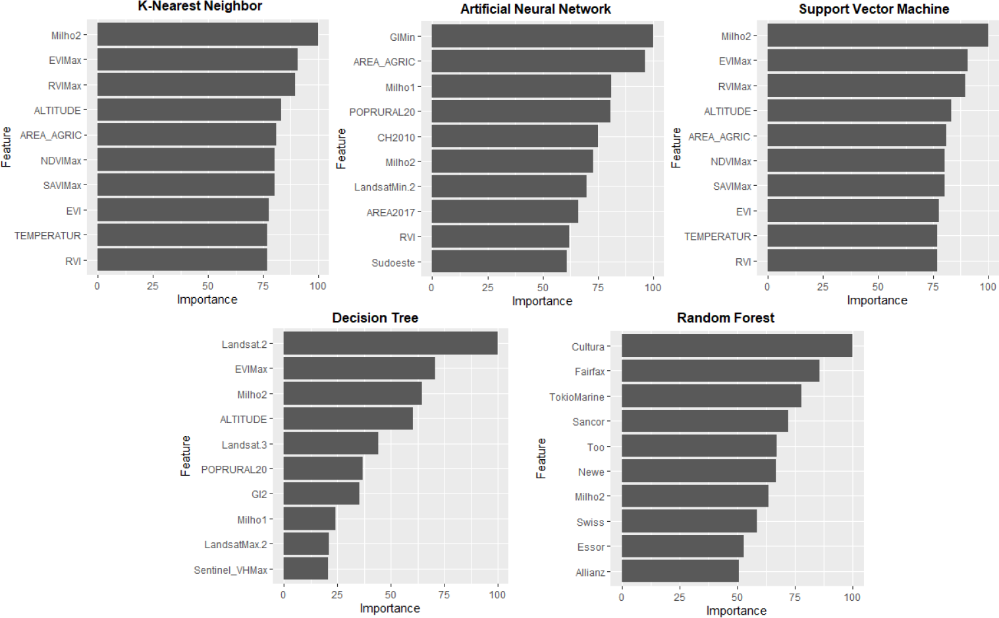
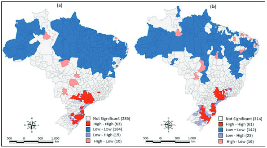
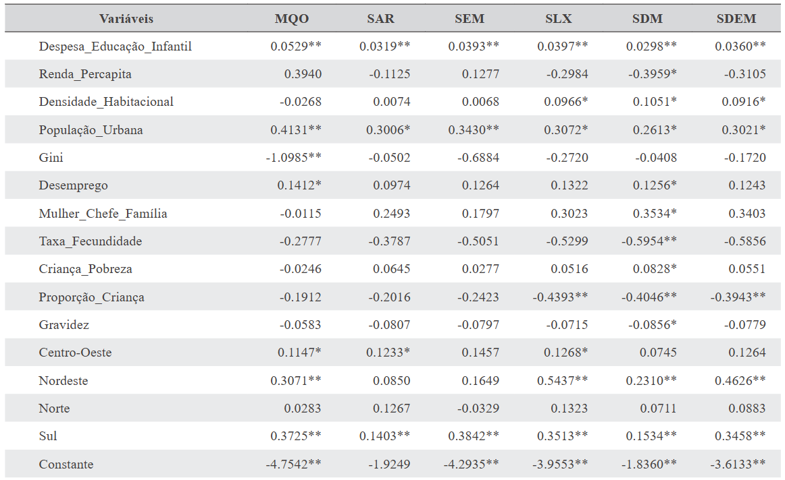

I am a Postdoctoral Research Fellow at the University of Exeter's Land, Environment, Economics, and Policy (LEEP) Institute working with
Professor Ian Bateman. I am also a researcher at the Institute of Applied Economic Research (IPEA) in Brazil. From 2022 to 2023, I was a Visiting Scholar at Johns Hopkins University (Carey Business School and Department of Environmental Health and Engineering). I hold a PhD in Economics from the University of São Paulo (FEA/USP), an MBA in Data Science and another in Agribusiness from USP/ESALQ, an MA in Economics, and a BA in Economics.
My research lies at the intersection of environmental and resource economics, remote sensing, and data science. I develop and apply statistical, econometric, and machine learning methods to evaluate the impacts of environmental change, assess the effectiveness of public policies, and support sustainable development. I integrate spatial analysis, GIS, and satellite data to generate insights that inform both academic debate and evidence-based decision-making.
Mapping Oil Palm Expansion in the Eastern Amazon Analysis of oil palm expansion using multisensor remote sensing imagery, combining optical and radar data from 2014 to 2020 for the Moju-Tailândia-Tomé-Açu region.
(Image: Land use classification maps showing spatial distribution of oil palm plantations, vegetative cover, and bare soil across three time points)Crop Loss Prediction Using AI and Remote Sensing

Comparison of the 10 most important variables across five machine learning algorithms used for crop loss prediction in the state of Paraná, Brazil
(Image: Variable importance rankings for KNN, ANN, SVM, Decision Tree, and Random Forest models. The methodology combines optical and radar satellite imagery with socioeconomic and environmental features to reduce informational asymmetries in the crop insurance market)
(Image: Thematic maps highlight changes in the innovative productivity of microregions before and after the implementation of state-level innovation laws. Data from INPI, processed using Geoda software. The black areas represent the highest quartile of patent activity.)Spatial Dynamics of Innovation in Brazil (2005–2015)

Local spatial autocorrelation of patent creation per 100,000 inhabitants in Brazilian microregions in 2005 (a) and 2015 (b)
(Image: LISA cluster maps showing regions with statistically significant local spatial patterns of innovation. High-High clusters highlight persistent centers of patent activity, such as São Paulo, Santa Catarina, and Rio Grande do Sul. These patterns confirm the role of spatial spillovers and path dependence in the dynamics of knowledge production in Brazil, as modeled by the Dynamic Spatial Durbin Model applied in the study.)
(Image: Spatial buffer analysis of the Brazilian highway system using geoprocessing techniques. Denser buffer zones are observed in regions with higher population density and economic activity, particularly in the South, Southeast, and parts of the Northeast. This mapping supports the relationship between road infrastructure and regional development.)Determinants of Access to Early Childhood Education in Brazil

Estimated coefficients from OLS and spatial econometric models (SAR, SEM, SLX, SDM, SDEM) on the determinants of access to early childhood education in Brazilian municipalities (2000–2010)
(Image: The table shows the results of multiple spatial models assessing how municipal characteristics — such as per capita income, urban population, poverty, fertility, and municipal spending — influence the increase in access to early childhood education. Spatial effects and spillovers are considered using different specifications. The Spatial Durbin Model (SDM) provided the best fit, capturing spatial dependencies in access patterns.)